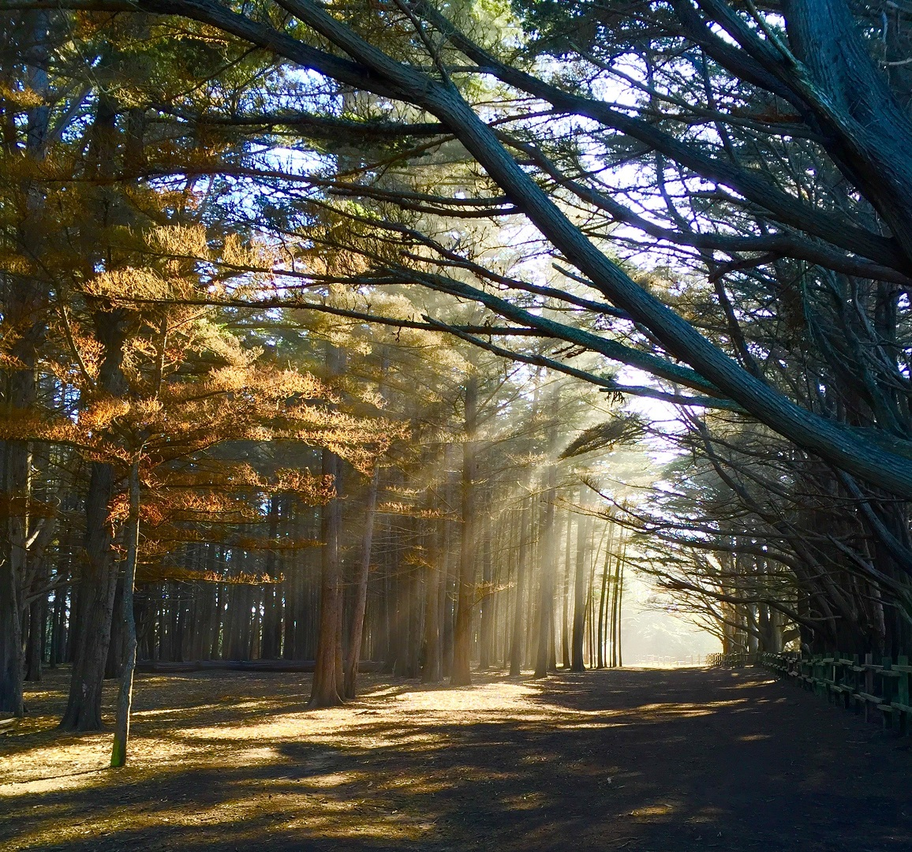
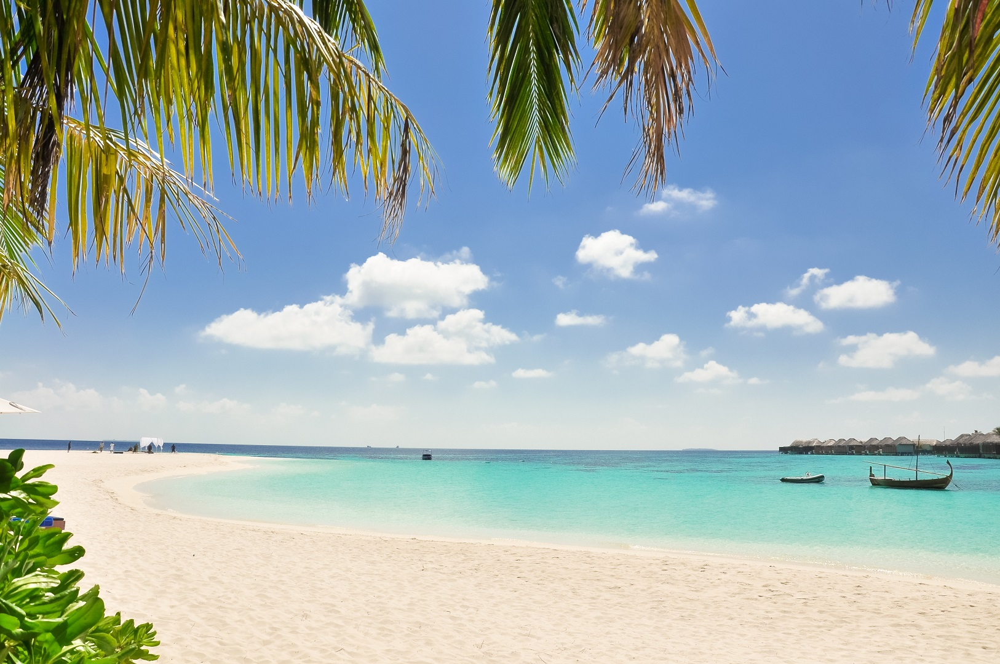
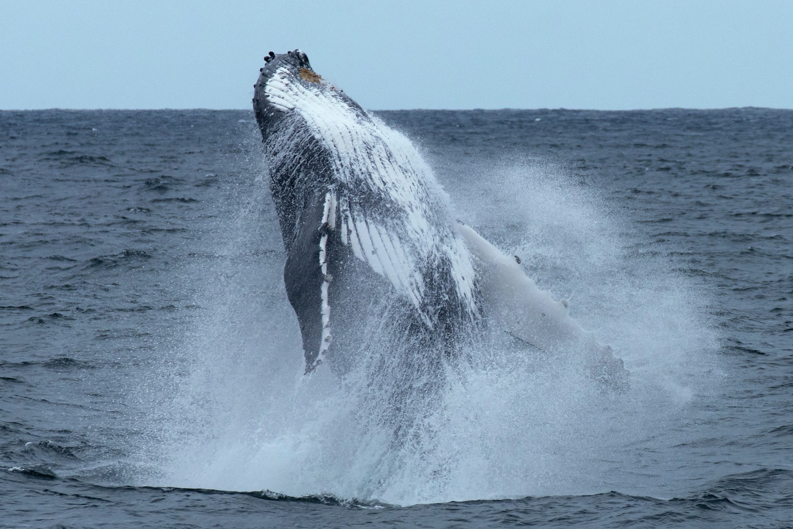
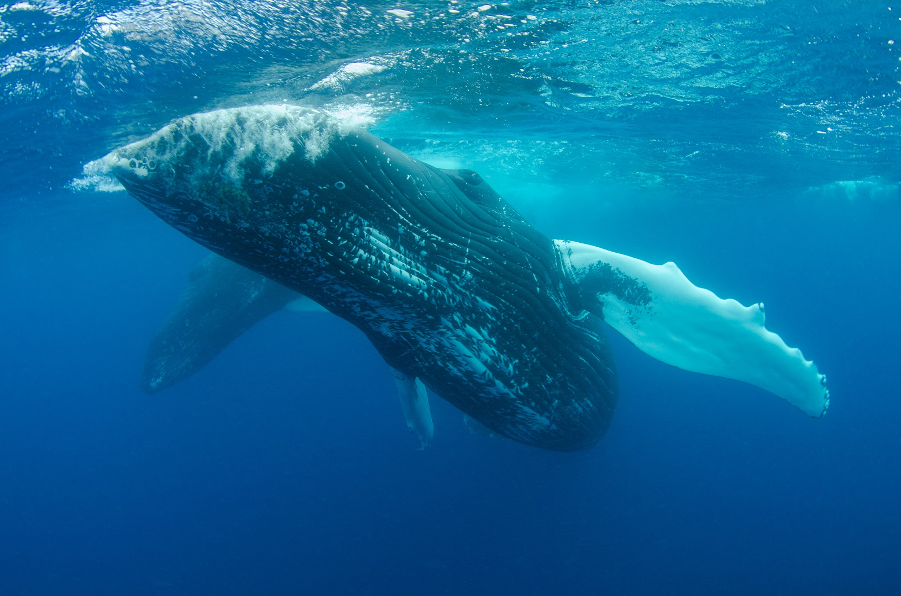
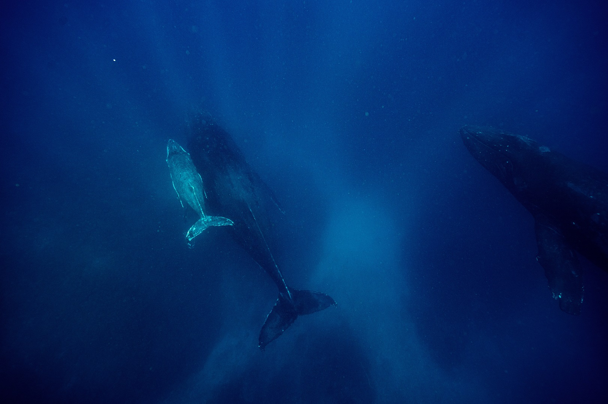

Look Deep Into The Nature
NATURE WILL BEAR THE CLOSEST INSPECTION. SHE
INVITES US TO LAY OUR EYE LEVEL WITH HER SMALLEST
LEAF. AND TAKE AN INSECT VIEW OS ITS PLAIN.
LEARN MORE

FOREST THERAPY

30 BEST BEACHES
Getting back to nature
There are countless amazing places around the world, each with its own unique
characteristics and attractions.These places are often celebrated for their
natural beauty, historical significance, architectural wonders, or cultural heritage.
LEARN MORE
Nature beaches offer a chance to escape to unspoiled and tranquil
coastal environments, where visitors can connect with nature, enjoy
the beauty of untouched landscapes, and support conservation efforts
to preserve these remarkable places.
LEARN MORE
Amazing Places
These amazing places offer a glimpse into the world's natural wonders,
historical treasures, and cultural marvels. Each one has its own story
and charm, making them popular destinations for travelers seeking unforgettable experiences.
This place is special...
Nature travel, also known as ecotourism or nature-based tourism,
is a type of travel that focuses on exploring and experiencing natural environments,
wildlife, and outdoor activities in a sustainable and environmentally responsible way.
Nature travel enthusiasts seek to connect with the natural world,
learn about ecosystems, and appreciate the beauty and biodiversity of the planet.
Nature travel is often associated with ecotourism, a form of tourism that prioritizes
environmental conservation, community engagement, and responsible travel practices.
We seek to inspire and educate all
members of our local region about the
benefits of being good environmental
stewards through responsible and
sustainable use of natural resources.
"
To discover and share
knowledge about plans
and their environment
in order to preserve
and enrich life.
-Botanical Garden mission
LEARN MORE
You Might Also Like

Snapping Shrimp 'Dinner Bell' May Tell
Gray Whales When To Eat

Get Up Close With Wildlife in Mexico's
Magdaleno Bay

Where It's Okay to Pet The Whales
Our Mission
Forest Therapy is a research-based framework for supporting healing
and wellness through immersion in forests and other natural environments.
Forest Therapy is inspired by the Japenese practice of Shinrin-Yoku,
which transaltes to "forest bathing". Studies have demonstrated a wide array
of health benefits, especially in the cardiovascular and immune systems, and for
stabilizing and improving mood and cognition.
LEARN MORE
Africa is home to many of the world's most famous fauna
The list is intended not only to showcase the incredible
variety of life on Earth but to "bring attention to the biodiversit
crisis and the species explores who are doing something about it,".
LEARN MORE
We are looking forward to start a project with you!
Nature travel allows you to connect with the natural world,
gain a deeper understanding of our planet's beauty and fragility,
and support conservation efforts. It's a way to create lasting memories
and experiences that foster a greater appreciation for the environment
and the importance of protecting it for future generations.
LEARN MORE
© 2021 Travel Hunt. All rigths reserved.
Terms & Agreements
Privacy Policy